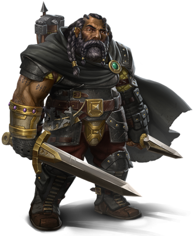
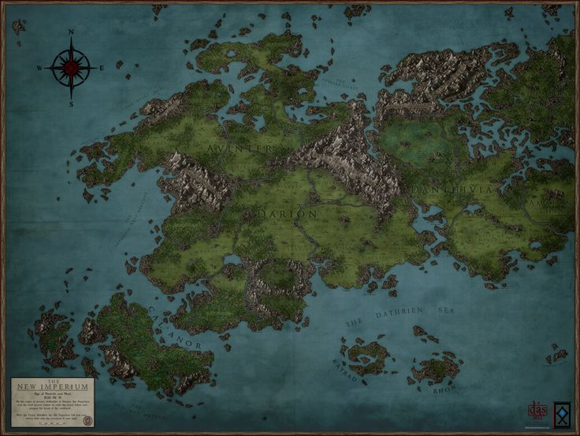
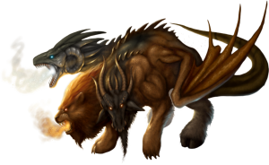

DUNGEONS & DRAGONS
Desde 1974, Dungeons & Dragons tem influenciado inúmeros escritores, diretores e designers de jogos, aproveitando a necessidade humana inata de se reunir com seus amigos e contar uma história emocionante juntos.
Anões
Audazes e resistentes, os anões são conhecidos como hábeis guerreiros, mineradores e trabalhadores em pedra e metal. Embora tenham menos de 1,50 metro de altura, os anões são tão largos e compactos que podem pesar tanto quanto um humano 60 centímetros mais alto. Sua coragem e resistência compete facilmente com qualquer povo mais alto. A pele dos anões varia do marrom escuro a um matiz mais pálido, tingido de vermelho, mas os tons mais comuns são o castanho claro ou bronzeado, como certos tons terrosos. O cabelo é longo, mas de estilo simples, geralmente negro, cinzento ou castanho, embora anões mais pálidos frequentemente possuem cabelos ruivos. Anões machos valorizam altamente suas barbas e preparam-nas com cuidado.
Mundos de Aventura
Os muitos mundos do jogo DUNGEONS & DRAGONS são lugares de magia e monstros, de bravos combatentes e aventuras espetaculares. Eles começam com a base na fantasia medieval e depois é só adicionar criaturas, localidades e magia para fazê-los únicos.
Os mundos do jogo DUNGEONS & DRAGONS existem em um cosmos chamado multiverso, conectados uns aos outros por caminhos estranhos e misteriosos, e também a outros planos de existência, como o Plano Elemental do Fogo e as Camadas Infinitas do Abismo. Nesse multiverso existe uma variedade infinita de mundos. Muitos deles foram publicados como cenários oficiais para jogos de D&D. As lendas dos cenários os Reinos Esquecidos, Dragonlance, Greyhawk, Dark Sun, Mystara e Eberron estão entrelaçadas na estrutura do multiverso. Ao lado desses mundos estão outras centenas de milhares, criados por gerações de jogadores de D&D em seus próprios jogos. E com toda a riqueza do multiverso, você pode criar o seu próprio mundo.
Bestiário
Algumas das criaturas que habitam os mundos de D&D possuem suas origens enraizadas na mitologia e literatura fantástica do mundo real. Outras criaturas são originais de D&D. Os monstros neste livro foram coletados de todas as edições anteriores do jogo. Aqui você encontrará bichos clássicos como o observador e a besta deslocadora assim como criaturas mais recentes como o chuul e ramo infectado. Bestas familiares se misturam com bestas estranhas, terríveis e grotescas. Na coletânea de monstros do passado, nós nos esforçamos para refletir a natureza multifacetada do jogo, com verrugas e tudo. Os monstros de D&D vem em todos os formatos e tamanhos, com histórias que não apenas nos arrepiam mas também nos fazem rir.
Se você for um Mestre experiente, alguns monstros descritos adiante podem surpreender você, já que nós consultamos os Manuais dos Monstros de outrora e inserimos factoides há muito esquecidos. Nós também adicionamos alguns fatos novos. Naturalmente, você pode fazer com estes monstros o que quiser. Nada do que dizemos aqui tem a intenção de reprimir sua criatividade. Se os minotauros no seu mundo são construtores de barcos e piratas, quem somos nós para questionar? É o seu mundo, no fim das contas.